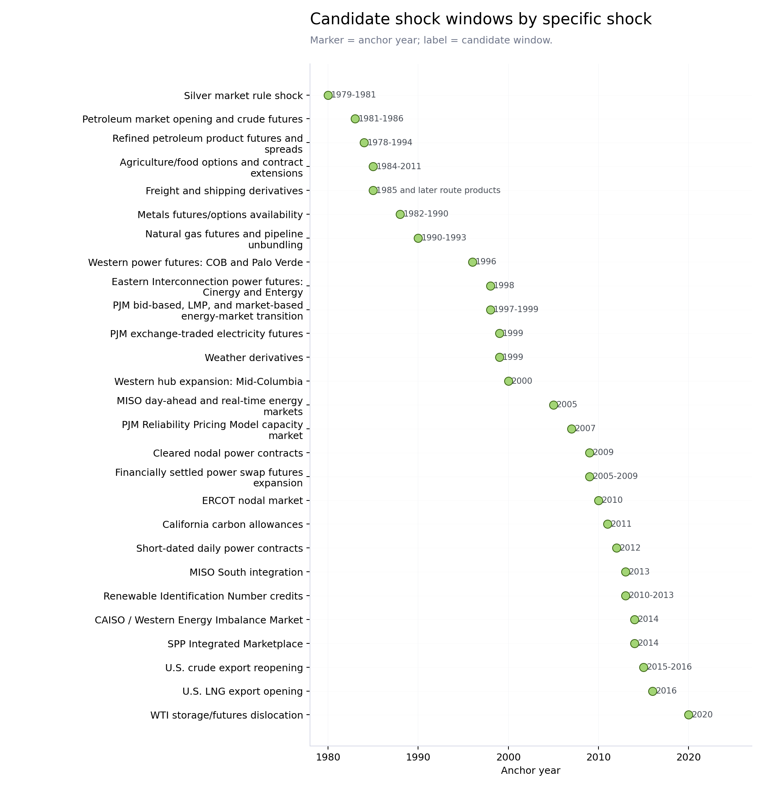

Segment Workstream Update
Generated at UTC: 2026-06-09T19:43:19+00:00. Source: data/raw/segment_data.csv.
Workstream Update
This page records the project space as a status update. Each row states what question the workstream could answer, what the current segment data anchor is, what has already been run, and what remains unresolved.
The tables are for discussion. They do not choose a direction or define treatment/control rules.
Workstream Inventory
| workstream | question_it_would_help_answer | current_data_anchor | segment_data_inputs | work_completed_so_far | unresolved_items | possible_follow_up_data |
|---|---|---|---|---|---|---|
| Candidate shock catalog | Which event families and windows are available for discussion before choosing a research design. | 11 source-backed shock types are cataloged, spanning anchor years 1980-2020. | Generated shock catalog, source table, exposure-family mapping, and event-window readiness screens. | Online source-backed catalog rows are grouped by shock type and separated from treatment/control decisions. | Each candidate still needs an explicit treatment map if it is used in estimation. | Contract rulebooks, exchange histories, ISO/RTO membership, utility territories, plant locations, and filing examples. |
| Early electricity output-producer hedgeability | Whether new electricity hedgeability is associated with changes in segment reporting or internal capital allocation among electricity producers. | 1,482 firms; 19,568 firm-years in the electric-power exposure screen. | BUSSEG/OPSEG segment operating margin, capex, assets, segment counts, HHI, and non-operating segment indicators. | Strict early RSZ margin row is present: coef +0.181, t=2.88. | HQ-state shock assignment is currently a proxy for operating exposure. | Plant locations, utility operating-company footprints, service territories, EIA/FERC data, or other operating-footprint evidence. |
| Electricity input-cost users | Whether high-electricity-input firms respond differently when electricity procurement or market structure changes. | Existing input-intensity files identify high-usage manufacturing and industrial candidates. | BUSSEG/OPSEG electricity-input intensity proxies, margins, capex, segment survival, and industry composition. | Input manufacturing RSZ margin row is present: coef -0.012, t=-0.34. | The outcome definition for input-cost users remains to be specified separately from the producer-side RSZ outcome. | Direct power-procurement disclosures, Item 7A derivative text, plant-level electricity intensity, margin volatility, or procurement-region exposure. |
| Modern electricity market expansion screens | Whether later power-market changes are visible in segment allocation or reporting outcomes. | Segment data extends through 2026 for the electric-power exposure screen. | BUSSEG/OPSEG RSZ-style allocation outcomes and firm-year segment granularity measures. | Modern regional, EIM, and period-break result tables are present in reports/tables/ where generated. | Regional treatment mapping and treated cohort size vary across events. | Event-specific operating footprints, market participation data, and a written event-by-event treatment map. |
| Energy commodity producer shocks: WTI and natural gas | Whether energy commodity derivative availability is associated with segment-level performance or investment allocation. | 2,808 firms; 31,291 firm-years in the oil/gas and petroleum exposure screen. | BUSSEG/OPSEG operating margin, capex, assets, and energy-industry exposure groups. | The shock catalog now separates petroleum, refined-product, natural-gas, RIN, export, and storage/dislocation windows. | The treatment map and mechanism narrative need to be separated from the electricity-output workstream. | Contract launch documentation, commodity exposure validation, facility/geography links, and firm/segment examples. |
| Geographic and currency exposure | Whether foreign or currency exposure can be measured from geographic segment disclosures. | GEOSEG average margin-ready share across decades is 22.7%; name and source-currency availability improve after the 1990s. | GEOSEG names, source currency/country fields, sales, and geographic segment counts. | The report series profiles GEOSEG decade coverage, top geography names, and top source currencies. | Geographic labels are broad, and ops/capxs coverage is lower than in BUSSEG. | Country/region parsing, FX derivative launch dates, foreign-sales controls, and text examples from filings. |
| Weather derivative or weather-risk exposure | Whether weather-risk hedging or exposure can be linked to segment reporting or allocation. | STSEG is small; GEOSEG is mostly country/region geography rather than local operating exposure. | STSEG where available, GEOSEG names, utility/agriculture segment screens, and segment reporting granularity. | The shock catalog includes a 1999 weather-derivative window and a mechanical coverage screen. | Local exposure is not directly observed in the segment file. | Plant/location data, local weather exposure, service territories, and weather-derivative market event documentation. |
| Freight and transport derivative exposure | Whether freight or transport derivative availability can be connected to segment investment or operating outcomes. | 1,336 firms; 13,532 firm-years in the transport/freight exposure screen. | BUSSEG/OPSEG transport/freight industry screens, operating margin, capex, and assets. | The shock catalog separates early Baltic freight derivatives from modern route products. | The treated population has not been connected to route or trade-flow exposure. | Freight derivative launch sources, shipping/airline/rail exposure checks, and industry-specific examples. |
| Metals/mining and commodity producer exposure | Whether metal or mining commodity derivative availability can be connected to segment performance or investment. | 3,403 firms; 35,908 firm-years in the metals/mining exposure screen. | BUSSEG/OPSEG metals/mining industry screens, operating margin, capex, and assets. | The shock catalog includes metals contract availability and silver market-rule windows. | Commodity-specific producer/user exposure is not yet separated. | Contract launch sources, commodity exposure examples, and industry-specific treatment definitions. |
| Segment-name and 10-K text exposure discovery | Whether segment names and filings can help validate exposure groups or find examples. | The raw segment file includes segment names; the report series includes keyword coverage screens. | Segment names, keyword groups, SIC/NAICS fields, and candidate firm lists. | Keyword screens cover corporate/unallocated, electricity, oil/gas, foreign, metals, transport, and manufacturing-input terms. | Segment names include generic labels and require validation before they can define exposure groups. | 10-K Item 7A text, derivative disclosures, hand-checked examples, and exposure validation notes. |
Candidate Shock Windows By Specific Shock
The shock catalog is based on online source checks and is separated from treatment assignment. The visible unit here is the specific candidate shock. The type field is retained only to help scan whether the row is a derivative-listing window, market-design change, regional market expansion, compliance market, policy-market access row, or event shock.

Candidate window catalog
| shock_family | candidate_window | event_anchor_year | shock_type | source_summary | exposure_families | mapping_requirement | caveats |
|---|---|---|---|---|---|---|---|
| PJM Reliability Pricing Model capacity market | 2007 | 2,007 | capacity market design | PJM completed its first annual RPM capacity auction in April 2007. | electric_power_output | Keep capacity-market exposure separate from energy-price hedgeability. | Capacity-market incentives are not the same mechanism as energy futures availability. |
| Petroleum market opening and crude futures | 1981-1986 | 1,983 | commodity derivative availability | Oil/refined-product price decontrol in 1981; NYMEX WTI crude futures in 1983; WTI options by 1986. | oil_gas_petroleum; airlines_fuel_sensitive; transport_freight; chemicals | Separate output-price exposure from fuel/feedstock input exposure before treatment coding. | This is an institutional hedgeability window, not a single commodity-price shock. |
| Refined petroleum product futures and spreads | 1978-1994 | 1,984 | commodity derivative availability | Heating oil, gasoline, and later crack-spread products appear inside the segment-data window. | oil_gas_petroleum; airlines_fuel_sensitive; transport_freight; chemicals | Segment SIC/name screens do not by themselves distinguish refined-product producers from fuel users. | Multiple product dates should be represented as separate sub-events if used for estimation. |
| Agriculture/food options and contract extensions | 1984-2011 | 1,985 | commodity derivative availability | Agricultural options and extensions arrive inside the sample even though core grain futures are much older. | agriculture_food | Choose sub-events by commodity and producer/user mechanism. | A broad 1984-2011 row is only a catalog grouping, not a single event design. |
| Metals futures/options availability | 1982-1990 | 1,988 | commodity derivative availability | Options and contract extensions for gold, silver, copper, and platinum occur inside the segment-data window. | metals_mining | Separate commodity producers from downstream metal users if mechanism matters. | Some core metals futures predate the segment sample; options/extensions are the cleaner timing variation. |
| Natural gas futures and pipeline unbundling | 1990-1993 | 1,990 | commodity derivative availability | Henry Hub natural gas futures launched in 1990; FERC Order 636 restructured interstate pipeline services. | oil_gas_petroleum; gas_utility; electric_power_output; chemicals; cement_minerals | Local basis and pipeline exposure require geography or facility data beyond segment rows. | Henry Hub benchmark exposure is not equivalent to local delivered-gas exposure. |
| California carbon allowances | 2011 | 2,011 | environmental/compliance market | ICE announced the first exchange-cleared California Carbon Allowance forward trade in 2011. | electric_power_output; cement_minerals; chemicals; paper_pulp; metals_mining | Requires California facility/program exposure. | Not a national treatment without state/program mapping. |
| Renewable Identification Number credits | 2010-2013 | 2,013 | environmental/compliance market | EPA RFS2 and tradable RIN compliance credits precede exchange-listed D4/D5/D6 RIN futures in 2013. | oil_gas_petroleum; agriculture_food | Compliance status and blender/refiner role must be identified outside generic industry screens. | Industry SIC does not equal RFS obligated-party status. |
| WTI storage/futures dislocation | 2020 | 2,020 | event shock | WTI May 2020 futures settled below zero amid storage constraints, demand collapse, and contract-market mechanics. | oil_gas_petroleum; transport_freight | Need to account for COVID demand collapse and storage/geography exposure. | This is an event/dislocation window, not a contract-availability window. |
| Freight and shipping derivatives | 1985 and later route products | 1,985 | freight derivative availability | Baltic freight-index derivatives begin in the 1980s; modern exchange listings cover container, tanker, LNG/LPG, and petroleum freight. | transport_freight; oil_gas_petroleum | Needs route, shipping, or trade-flow exposure to go beyond broad transport SIC. | Modern route products are not captured by a single 1985 event year. |
| Silver market rule shock | 1979-1981 | 1,980 | market rule episode | CFTC historical material links the Hunt silver episode to subsequent exchange and regulatory market-rule actions. | metals_mining | Need commodity-specific mining exposure examples. | This is a market-integrity/rule-change episode rather than a broad operating hedgeability shock. |
| U.S. crude export reopening | 2015-2016 | 2,015 | policy/market access | U.S. crude export restrictions were lifted in late 2015, with export access expanding afterward. | oil_gas_petroleum | Separate domestic producers from refiners whose input spreads may move differently. | Policy exposure depends on production/refining position and geography. |
| U.S. LNG export opening | 2016 | 2,016 | policy/market access | Modern Lower-48 LNG export capacity opened U.S. gas markets more directly to global demand. | oil_gas_petroleum; gas_utility | Needs geography/facility linkage for LNG terminal or Gulf Coast exposure. | Post-2010 window only; sample composition and shale-era trends need separate controls. |
| Western power futures: COB and Palo Verde | 1996 | 1,996 | power derivative availability | First two exchange-traded electricity futures began trading for COB and Palo Verde in March 1996. | electric_power_output | Use an explicit western hub footprint before assigning treated firms. | Some later regulatory summaries describe western trading history differently; log source conflicts if using exact first-trade timing. |
| Eastern Interconnection power futures: Cinergy and Entergy | 1998 | 1,998 | power derivative availability | Regulatory/exchange records document Cinergy and Entergy electricity futures in the late-1990s expansion. | electric_power_output | Define each hub footprint separately. | Hub definitions and physical-market footprints need external documentation. |
| PJM exchange-traded electricity futures | 1999 | 1,999 | power derivative availability | CFTC tables list PJM electricity futures in the late-1990s exchange-traded power contract set. | electric_power_output | Link firms to PJM exposure before using this as a treated event. | Do not pool with PJM LMP unless the estimand is explicitly broad institutional change. |
| Western hub expansion: Mid-Columbia | 2000 | 2,000 | power derivative availability | FERC/CAISO staff report identifies Mid-Columbia as an additional western electricity futures hub. | electric_power_output | Needs Pacific Northwest hub footprint and utility operating territory mapping. | Western crisis timing may confound a narrow derivative-availability interpretation. |
| Cleared nodal power contracts | 2009 | 2,009 | power derivative availability | Nodal Exchange launched cleared cash-settled nodal power contracts and later registered as a DCM. | electric_power_output | Requires node/hub-to-firm or service-territory mapping. | Better treated as national/exploratory until a node-footprint layer exists. |
| Financially settled power swap futures expansion | 2005-2009 | 2,009 | power derivative availability | NYMEX/CME added financially settled power futures across PJM, NYISO, ISO-NE, MISO, ERCOT, and CAISO-related hubs. | electric_power_output | Group contracts by hub/ISO before constructing regional treatment. | This is more market-access/menu expansion than a local institutional shock. |
| Short-dated daily power contracts | 2012 | 2,012 | power derivative availability | NYMEX/CME listed daily electricity futures and a broader suite of natural gas and power markets in 2012. | electric_power_output; gas_utility | Use as a national/exploratory derivative-market expansion unless hub-level mapping is added. | Not a single regional institutional shock. |
| PJM bid-based, LMP, and market-based energy-market transition | 1997-1999 | 1,998 | power market design | PJM opened a bid-based market in 1997 and moved through LMP and market-based bidding implementation by 1999. | electric_power_output | Keep market-design timing separate from derivative-listing timing. | Annual segment data may not distinguish the three close implementation milestones. |
| MISO day-ahead and real-time energy markets | 2005 | 2,005 | power market design | FERC describes MISO market operations beginning in April 2005. | electric_power_output | Separate original MISO states/members from MISO South entrants. | This is market-design access, not direct hedge-use evidence. |
| ERCOT nodal market | 2010 | 2,010 | power market design | ERCOT implemented the nodal wholesale market in December 2010. | electric_power_output | Identify ERCOT operating exposure; headquarters state alone is a fallback proxy. | ERCOT is institutionally distinct from FERC-jurisdictional RTOs. |
| MISO South integration | 2013 | 2,013 | regional power market expansion | MISO South systems integrated into MISO in December 2013. | electric_power_output | Use utility/service-area membership, not all firms in broad states. | MISO market operations existed since 2005; this is a regional expansion window. |
| SPP Integrated Marketplace | 2014 | 2,014 | regional power market expansion | SPP launched the Integrated Marketplace with day-ahead, real-time, TCR, RUC, reserve, and balancing authority functions. | electric_power_output | Construct SPP member/territory exposure before treatment coding. | Broad multi-state event. |
| CAISO / Western Energy Imbalance Market | 2014 | 2,014 | regional power market expansion | CAISO and PacifiCorp launched the financially binding Western EIM in November 2014. | electric_power_output | Represent later EIM entrants as staggered rows if the design uses expansion timing. | Real-time imbalance market only; it is not the same as full RTO membership. |
| Weather derivatives | 1999 | 1,999 | weather risk derivative availability | CME introduced exchange-traded weather derivatives in 1999. | electric_power_output; agriculture_food | Requires local weather exposure or revenue-seasonality evidence. | GEOSEG and segment names are likely too coarse to observe weather exposure directly. |
Exposure Families Available In BUSSEG/OPSEG
The current script screens industry and segment-SIC exposure because those fields connect to segment operating and investment outcomes. These are coverage screens, not final treatment definitions.
The exposure screen starts from seg_sic, defined as the first nonmissing value of sics1, sics2, then firm-level sic. A few segment-name keyword checks are added where the SIC alone may miss labeled segments.
Current exposure-screen rules
| exposure_field | current_rule | how_to_read_it |
|---|---|---|
| seg_sic | first nonmissing of sics1, sics2, then firm sic | Segment SIC is used first. Firm SIC is only a fallback when segment SIC is missing. |
| electric_power_output | SIC 4910-4939 or 4991; or segment name contains ELECTRIC, POWER, UTILITY | Captures electric power or utility segment exposure for coverage exploration. |
| gas_utility | SIC 4920-4925; or segment name contains NATURAL GAS or GAS UTILITY | Captures gas utility segment exposure. |
| oil_gas_petroleum | SIC 1311, 1380-1389, 2911, 4610-4619; or segment name contains OIL, GAS, PETROLEUM, REFIN | Captures oil, gas, petroleum, refining, and pipeline-related segment exposure. |
| broader_energy | electric_power_output or gas_utility or oil_gas_petroleum or SIC 4900-4999 | Broad energy/utility screen used to summarize overall energy exposure. |
| metals_mining | SIC 1000-1499 or 3310-3399 | Mining plus primary metal manufacturing screen. |
| agriculture_food | SIC 0100-0999 or 2000-2099 | Agriculture and food manufacturing screen. |
| transport_freight | SIC 4000-4799 | Transportation and freight industry screen. |
| airlines_fuel_sensitive | SIC 4512, 4513, 4581; or segment name contains AIRLINE, AVIATION, AIR | Air transport screen used as a possible fuel-sensitive subgroup. |
| chemicals | SIC 2800-2899 | Chemical manufacturing screen. |
| paper_pulp | SIC 2600-2699; or segment name contains PAPER or PULP | Paper and pulp screen. |
| cement_minerals | SIC 3200-3299; or segment name contains CEMENT, LIME, MINERAL, GLASS | Stone, clay, glass, cement, and minerals screen. |
Coverage under those rules

| exposure_family | rows | firms | firm_years | min_year | max_year | margin_ready_pct | allocation_ready_pct |
|---|---|---|---|---|---|---|---|
| broader_energy | 80,555 | 3,992 | 46,248 | 1,976 | 2,026 | 77.2 | 72.0 |
| chemicals | 54,482 | 3,443 | 36,693 | 1,976 | 2,026 | 71.3 | 74.9 |
| metals_mining | 60,711 | 3,403 | 35,908 | 1,976 | 2,026 | 72.1 | 74.2 |
| oil_gas_petroleum | 47,669 | 2,808 | 31,291 | 1,976 | 2,025 | 80.7 | 75.9 |
| electric_power_output | 34,219 | 1,482 | 19,568 | 1,976 | 2,026 | 74.6 | 67.9 |
| transport_freight | 21,904 | 1,336 | 13,532 | 1,976 | 2,025 | 80.8 | 70.6 |
| agriculture_food | 21,082 | 1,171 | 12,008 | 1,976 | 2,026 | 80.2 | 68.0 |
| gas_utility | 11,815 | 660 | 8,649 | 1,976 | 2,025 | 79.4 | 75.4 |
| cement_minerals | 10,646 | 1,007 | 8,438 | 1,976 | 2,026 | 73.2 | 81.7 |
| paper_pulp | 9,275 | 501 | 5,438 | 1,976 | 2,025 | 87.0 | 78.1 |
Mechanical Event-Window Coverage
The event-window table applies the current exposure-family screen to each source-backed candidate. It shows whether there are segment rows around the anchor year; it does not assign treated firms.
| shock_family | candidate_window | event_anchor_year | shock_type | exposure_families | firms | firm_years | margin_ready_pct | allocation_ready_pct |
|---|---|---|---|---|---|---|---|---|
| PJM Reliability Pricing Model capacity market | 2007 | 2,007 | capacity market design | electric_power_output | 701 | 5,068 | 62.6 | 56.9 |
| Petroleum market opening and crude futures | 1981-1986 | 1,983 | commodity derivative availability | oil_gas_petroleum; airlines_fuel_sensitive; transport_freight; chemicals | 2,642 | 15,561 | 98.0 | 94.2 |
| Refined petroleum product futures and spreads | 1978-1994 | 1,984 | commodity derivative availability | oil_gas_petroleum; airlines_fuel_sensitive; transport_freight; chemicals | 2,693 | 15,771 | 97.9 | 94.3 |
| Agriculture/food options and contract extensions | 1984-2011 | 1,985 | commodity derivative availability | agriculture_food | 543 | 2,958 | 98.5 | 93.0 |
| Metals futures/options availability | 1982-1990 | 1,988 | commodity derivative availability | metals_mining | 1,721 | 9,658 | 91.8 | 94.0 |
| Natural gas futures and pipeline unbundling | 1990-1993 | 1,990 | commodity derivative availability | oil_gas_petroleum; gas_utility; electric_power_output; chemicals; cement_minerals | 2,928 | 17,286 | 95.8 | 94.7 |
| California carbon allowances | 2011 | 2,011 | environmental/compliance market | electric_power_output; cement_minerals; chemicals; paper_pulp; metals_mining | 3,653 | 22,812 | 62.5 | 64.5 |
| Renewable Identification Number credits | 2010-2013 | 2,013 | environmental/compliance market | oil_gas_petroleum; agriculture_food | 1,291 | 8,779 | 65.9 | 59.6 |
| WTI storage/futures dislocation | 2020 | 2,020 | event shock | oil_gas_petroleum; transport_freight | 1,071 | 7,136 | 70.3 | 58.0 |
| Freight and shipping derivatives | 1985 and later route products | 1,985 | freight derivative availability | transport_freight; oil_gas_petroleum | 1,955 | 11,740 | 98.0 | 94.5 |
| Silver market rule shock | 1979-1981 | 1,980 | market rule episode | metals_mining | 1,473 | 7,874 | 95.4 | 89.3 |
| U.S. crude export reopening | 2015-2016 | 2,015 | policy/market access | oil_gas_petroleum | 915 | 6,241 | 66.7 | 62.2 |
| U.S. LNG export opening | 2016 | 2,016 | policy/market access | oil_gas_petroleum; gas_utility | 903 | 6,173 | 65.9 | 62.0 |
| Western power futures: COB and Palo Verde | 1996 | 1,996 | power derivative availability | electric_power_output | 758 | 4,169 | 82.6 | 77.6 |
| Eastern Interconnection power futures: Cinergy and Entergy | 1998 | 1,998 | power derivative availability | electric_power_output | 786 | 4,407 | 75.6 | 70.3 |
| PJM exchange-traded electricity futures | 1999 | 1,999 | power derivative availability | electric_power_output | 785 | 4,519 | 72.5 | 66.9 |
| Western hub expansion: Mid-Columbia | 2000 | 2,000 | power derivative availability | electric_power_output | 786 | 4,624 | 70.2 | 64.3 |
| Cleared nodal power contracts | 2009 | 2,009 | power derivative availability | electric_power_output | 699 | 5,002 | 63.6 | 57.6 |
| Financially settled power swap futures expansion | 2005-2009 | 2,009 | power derivative availability | electric_power_output | 699 | 5,002 | 63.6 | 57.6 |
| Short-dated daily power contracts | 2012 | 2,012 | power derivative availability | electric_power_output; gas_utility | 766 | 5,399 | 66.2 | 60.1 |
| PJM bid-based, LMP, and market-based energy-market transition | 1997-1999 | 1,998 | power market design | electric_power_output | 786 | 4,407 | 75.6 | 70.3 |
| MISO day-ahead and real-time energy markets | 2005 | 2,005 | power market design | electric_power_output | 720 | 5,040 | 62.2 | 56.5 |
| ERCOT nodal market | 2010 | 2,010 | power market design | electric_power_output | 689 | 4,949 | 64.4 | 58.3 |
| MISO South integration | 2013 | 2,013 | regional power market expansion | electric_power_output | 640 | 4,718 | 65.5 | 58.4 |
| SPP Integrated Marketplace | 2014 | 2,014 | regional power market expansion | electric_power_output | 633 | 4,606 | 66.1 | 58.6 |
| CAISO / Western Energy Imbalance Market | 2014 | 2,014 | regional power market expansion | electric_power_output | 633 | 4,606 | 66.1 | 58.6 |
| Weather derivatives | 1999 | 1,999 | weather risk derivative availability | electric_power_output; agriculture_food | 1,269 | 7,529 | 76.0 | 69.8 |
Open Design Choices
- Shock family: electricity, natural gas, WTI crude, weather, freight, metals/mining, RIN/carbon, policy-market access, or currency/geography exposure.
- Exposure definition: HQ-state proxy, segment industry proxy, input-intensity proxy, plant/service-territory data, or filing-text evidence.
- Mechanism split: whether output-price hedgeability and input-cost hedgeability belong in one paper frame or separate analyses.
- Outcome family: segment reporting, RSZ-style capital allocation, margin volatility, segment survival, employment/R&D/resource allocation, or derivative disclosure text.